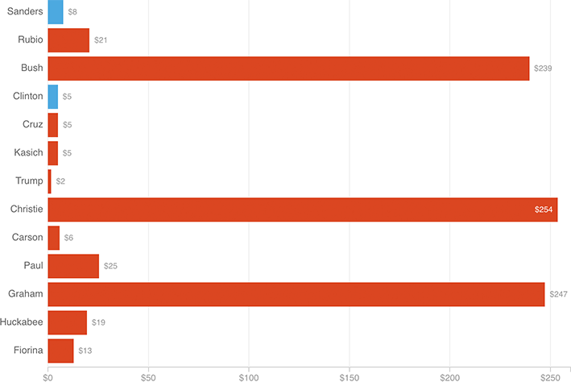

Removing Bobby Jindal from the prior chart makes the total spending per vote clearer. A few GOP candidates (Bush, Christie, Graham) stand out for high spending despite low votes, giving them very high $/vote totals.

Notes
— Spending totals and are approximate. Democratic vote totals include estimates for states in which delegates, not votes, were reported.
— Vote totals included votes cast after candidates dropped out.